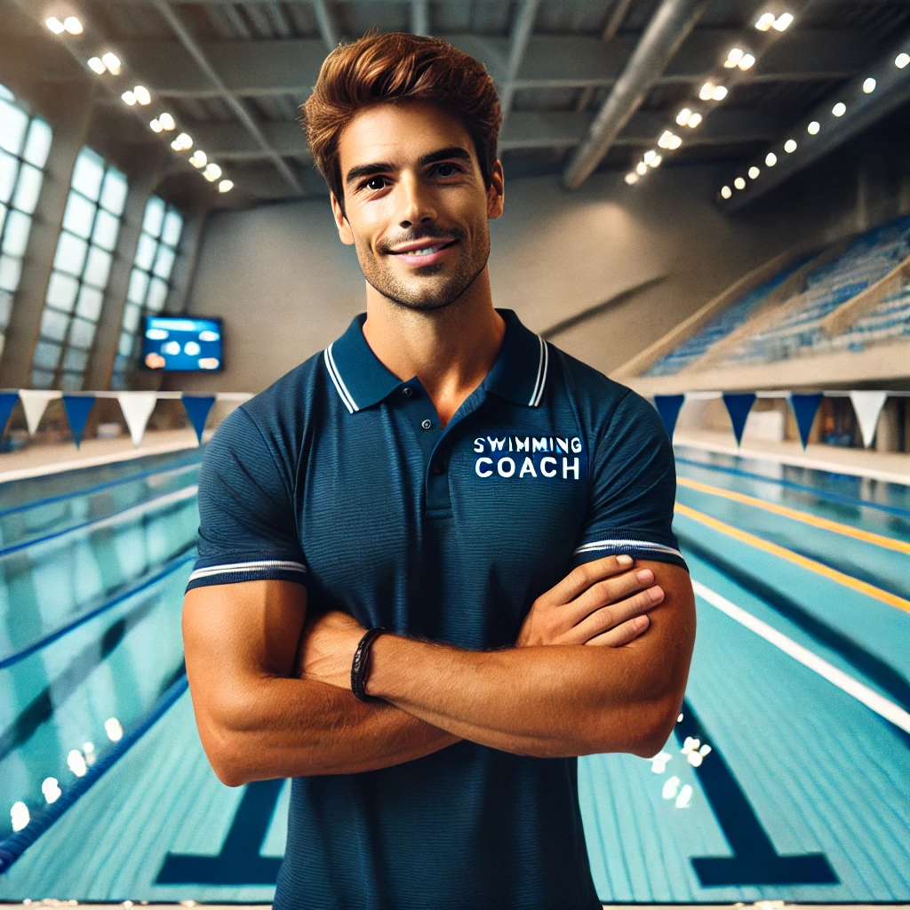

🌊 Aprenda a nadar e melhore sua forma física com a Natação! 🏊♂️
A natação é um dos esportes mais completos! Além de fortalecer o corpo, melhora a respiração, alivia o estresse e proporciona um excelente condicionamento físico. Seja você iniciante ou atleta, temos treinos para todos os níveis! 💪
✅ Aulas para crianças, adultos e atletas.
✅ Melhore sua resistência, respiração e flexibilidade.
✅ Aprenda e aperfeiçoe os quatro estilos: crawl, costas, peito e borboleta.
✅ Ambiente seguro, com piscinas aquecidas e acompanhamento profissional!
👨🏫 Seu professor: Felipe Martins
Ex-atleta e treinador há mais de 8 anos, Felipe é especialista em natação competitiva e ensino para iniciantes. Com sua didática envolvente, ele ajudará você a nadar com mais eficiência e confiança! 🏅

🔥 Venha mergulhar nessa experiência e transforme sua forma de nadar!